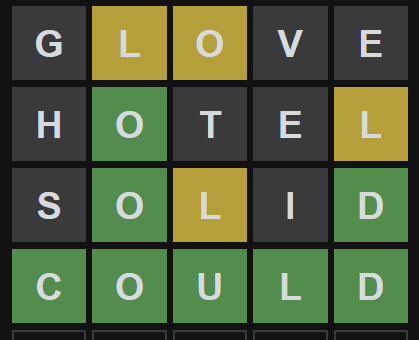
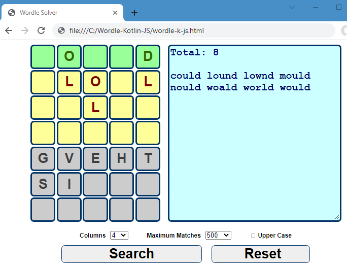
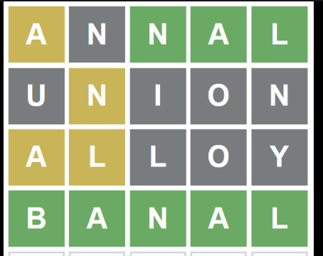
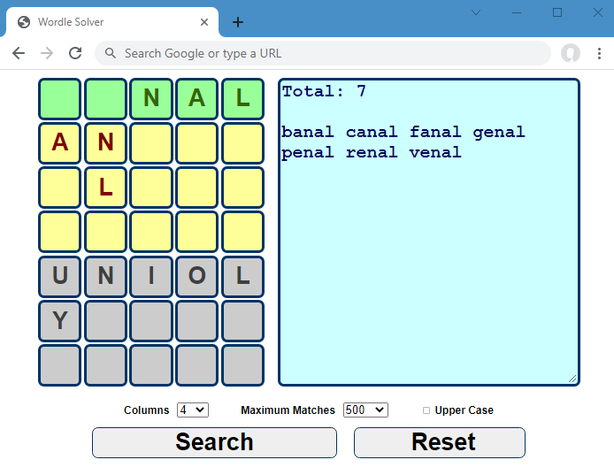
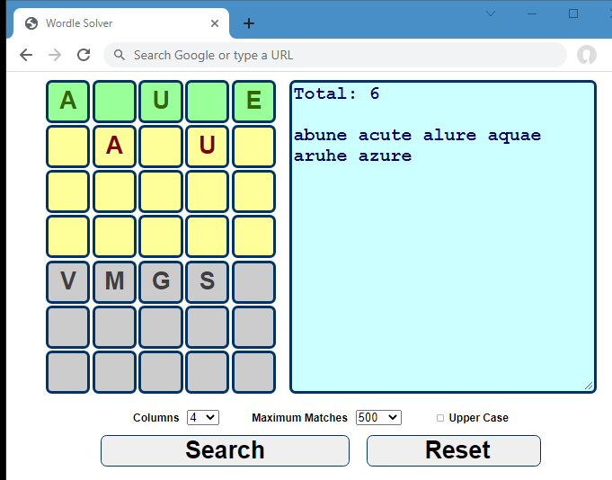
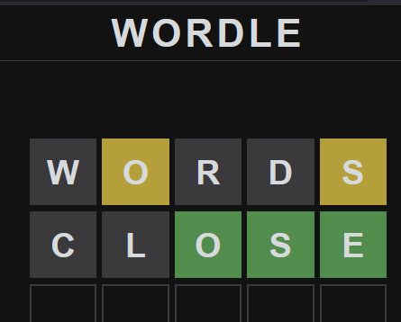
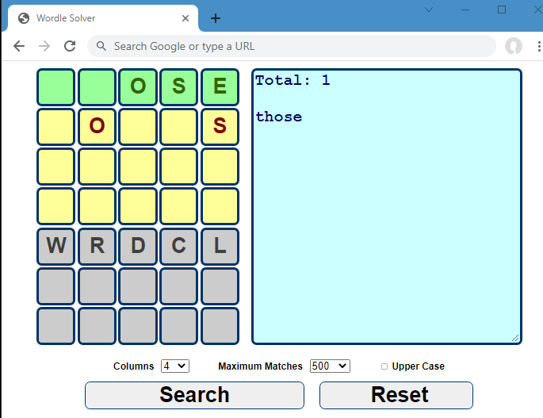

How to use Wordle Solver
Example 1:
Yellow letters are LOLL, Green letters are O D, Grey letter are GVEHTSI, Then
you filter out 8 words only


Example 2: Yellow letters are ANL, Green letters are NAL, Grey letter are
UNIOLY, Then you filter out 7 words only


Example 3: Yellow letters are AU, Green letters are AUE, Grey letter are VMGS,
Then you filter out 6 words only

Example 4: Yellow letters are OS, Green letters are OSE, Grey letter are
WRDCL, Then you filter out one word only

